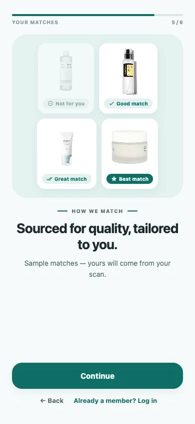

Start with your skin
Use the optional AI-assisted scan, then share your concerns, sensitivity, budget, and preferences. The scan supports cosmetic guidance—not medical diagnosis.
Start with an optional AI-assisted face scan and a few quick answers. Connie builds a clear AM and PM routine, matches you with products selected for quality and fit, and helps you stay consistent—all without a subscription.


Optional skin scanA clearer cosmetic starting point
Tailored matchesQuality-sourced products filtered for you
Your routineSimple personalized AM + PM steps
Progress that helpsStreaks and patterns, not perfection
Meet Connie. Scan. Match. Glow.
The app’s six-step welcome explains exactly what happens next: an optional scan, a few personal answers, a routine, and product matches shaped around you.
Use the optional AI-assisted scan, then share your concerns, sensitivity, budget, and preferences. The scan supports cosmetic guidance—not medical diagnosis.
Connie turns that context into clear AM and PM steps, then shows which quality-sourced products are a good, great, or best match for you.
Keep your current products, shop a match only if you want to, and use streaks and weekly patterns to learn what consistency looks like for your skin.
Personalized from the first screen
Connie starts with a focused library chosen around formula quality, routine role, and fair value. Your optional scan and assessment then help narrow that library to the products that fit your skin and goals.

Connie flags a small set of common routine risks—like combining a retinoid with an acid or missing SPF in the morning—and gives you a calmer next step.
High-priority check
Retinoid and exfoliating acid in the same routine may increase irritation. Consider a recovery night between them.
Your current streak, 7-day and 30-day completion rates, and monthly consistency map make it easier to stay motivated and notice patterns without chasing perfection.

Years of global sourcing
We’re building a focused library across cleansers, serums, moisturizers, sunscreens, and treatments. Products are organized by skin type, concern, ingredients, sensitivity, and routine role—so every match comes with a reason.
Use what you own, shop your matches, buy a recommendation somewhere else, or purchase it from Connie. Your app features stay exactly the same either way.
See why the app is free

Our business model, plainly
We believe useful skincare guidance should help you make a better purchase, not become another monthly bill. Connie’s Skin is a product seller, so the app can stay free.
The AI-assisted scan, personalized routines, product library, ingredient cautions, reminders, tracking, and streaks are available without a subscription or digital upgrade.
We focus on formulas, routine roles, and fair value first. Then Connie uses your skin context to narrow the library instead of presenting an endless shelf.
If you choose to buy from us, we aim to price physical products fairly and clearly. A purchase never unlocks app features, and you’re always free to buy elsewhere.
Years of global sourcing. Fair prices. Nothing unnecessary.
Privacy is part of the routine
Connie's Skin uses your account and routine data to run the features you choose. We do not sell personal information, run third-party ads, or use an advertising profile to shape your recommendations.
The honest answers
Connie is a routine companion, not a dermatologist. The app is designed to make everyday skincare easier to follow—not to diagnose or treat a condition.
No. Ingredient cautions and scan feedback are educational, cosmetic guidance. Stop using a product that causes irritation and consult a qualified clinician for persistent or concerning symptoms.
No. You can add products you already own and follow your recommended AM and PM routine without buying anything. If a recommendation interests you, you can buy it from Connie or anywhere else.
Connie’s Skin earns revenue by selling optional physical skincare products at prices we aim to keep fair and transparent. We do not sell subscriptions or lock scan, recommendation, library, tracking, or streak features behind a purchase.
We start with formulas, useful routine roles, and fair value. Your match labels then consider optional cosmetic scan insights together with your stated concerns, sensitivity, goals, and preferences.
Open Settings in the app and choose Delete Account. You can also contact support if you cannot access the app.
Glowing skin starts here
Connie's Skin is being prepared for iOS and Android. Join the waitlist for the optional scan, personalized routine, quality-sourced product matches, and progress tracking.